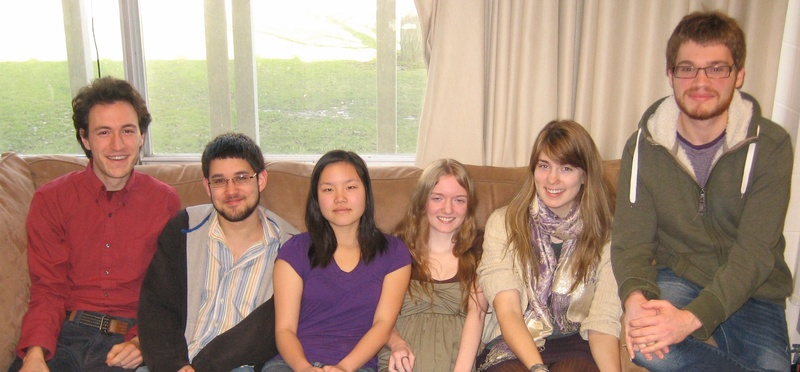
Team Prestissimo
Luke Lovett, Jacob Chae, Lily Pratt, Abby Marsh, Liz Bennett, Jack Ratner
Winter Term 2012
Prestissimo
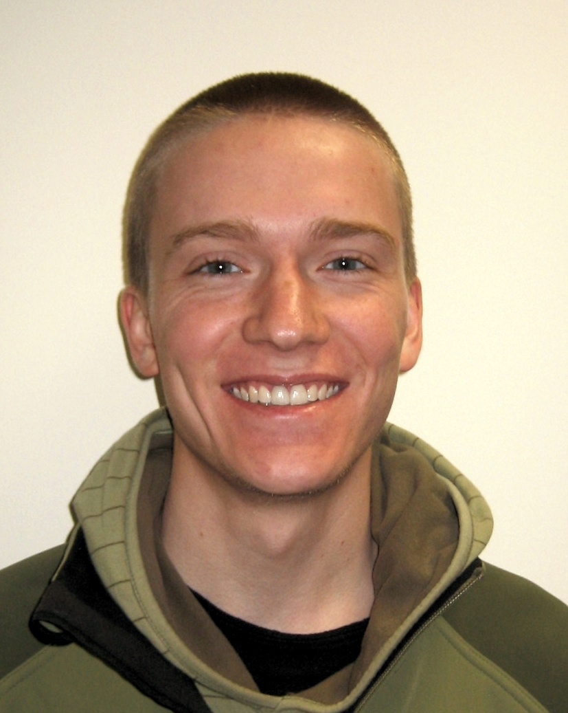
Ike McCreery
Oberlin College 2013
Summer 2011
Open Source Audit
Computer Science
Finishing his degree at Oberlin College
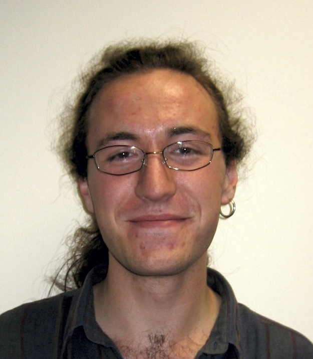
Luke Lovett
Oberlin College 2013
Summer 2011
Open Source Audit
Double Degree: Computer Science, Technology in Music
Technical Staff at 10gen in San Francisco
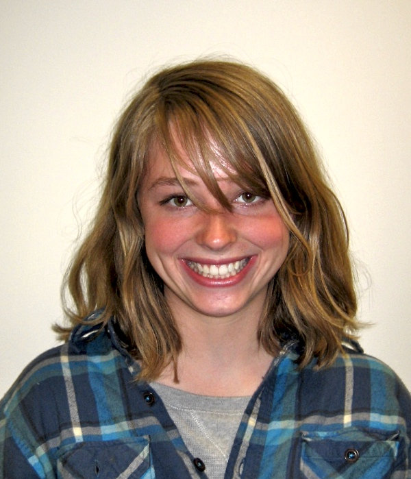
Bekah Blank
Oberlin College 2012
Fall 2010
Virtual Machines for Security Education (XenLabs)
Computer Science
Shansi fellowship at Shanxi Agricultural University
Jason Kimmel
Oberlin College 2011
Summer 2010
Audlib
Computer Science
Garrett Robinson
Oberlin College 2011
Summer 2010
Virtual Machines for Security Education (XenLabs)
Computer Science
Security Engineer at the Mozilla Corporation
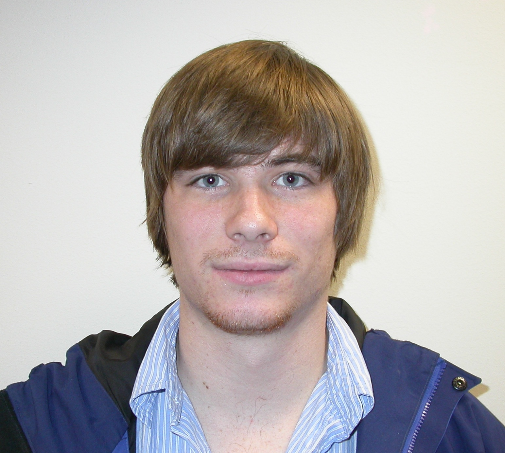
Thomas Ramfjord
Oberlin College 2011
Summer 2009
Audlib
Computer Science, Neuroscience
Employee of Quantcast in San Francisco
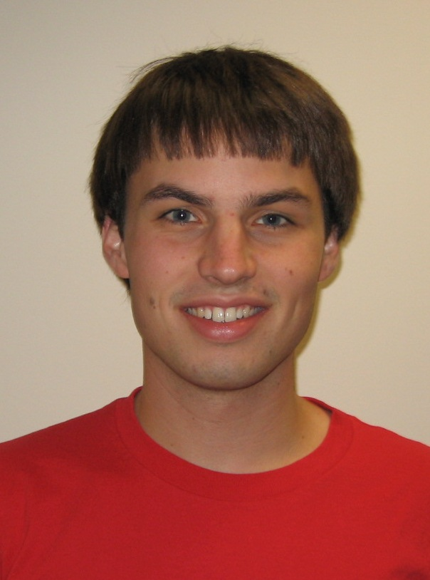
Nathaniel Gephart
Oberlin College 2010
Summer 2009
Virtual Machines for Security Education (XenLabs)
Computer Science
Technical Staff at VMWare
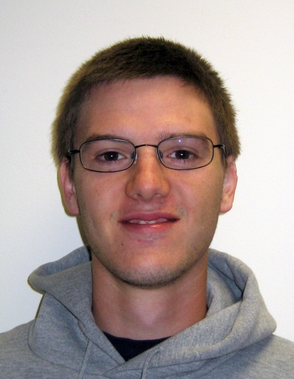
Axis Sivitz
Oberlin College 2008
Summer 2007
Audlib
Computer Science
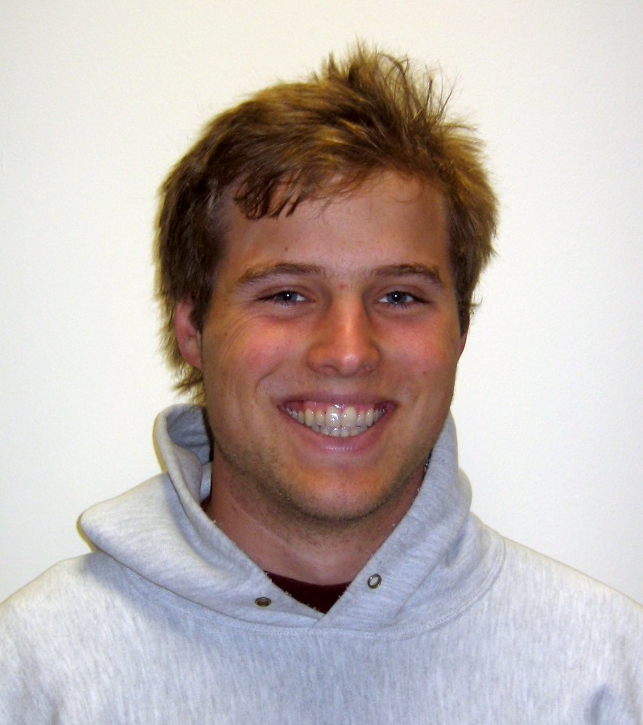
Nick Hatt
Oberlin College 2008
Summer 2007
Audlib
Computer Science
Interface Analyst at Epic Systems
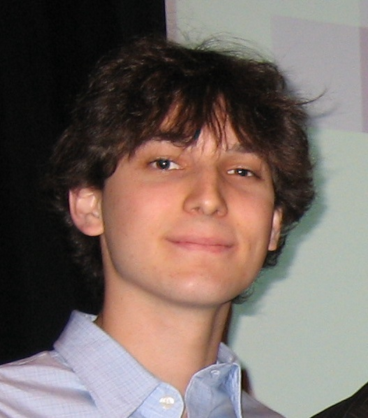
Matt Singleton
Swarthmore College 2007
Spring 2006
Trackle
Computer Science & Linguistics
Software Developer for Datadog in NYC
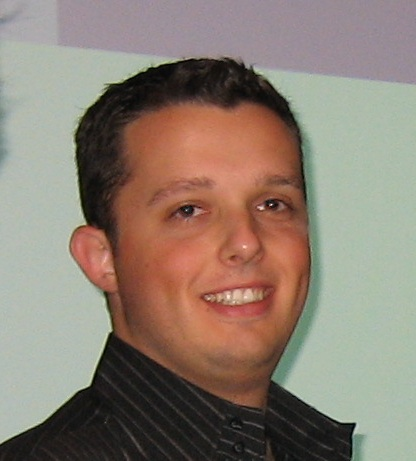
Dan Crosta
Swarthmore College 2006
Spring 2006
Trackle
Computer Science
Python Web Application Developer at 10gen in NYC
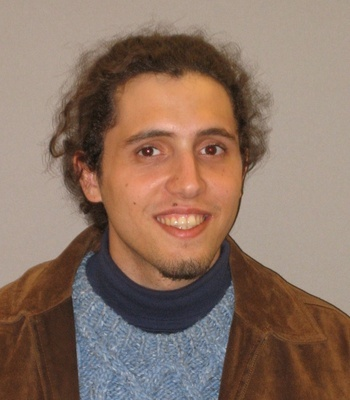
Mustafa Paksoy
Swarthmore College 2007
Summer 2005
Audlib
Computer Science
Homepage Senior Developer at salesforce.com
{kind=link}